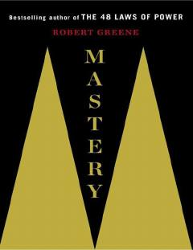

MO'z sohasida mutaxassis va daho bo'lish sirlarini o'rganing.
Kitob insonning o'z sohasida yuqori mahorat cho'qqisiga chiqishi uchun qanday yo'l tutishi kerakligini tahlil qiladi. Robert Greene tarixiy shaxslar va zamonaviy daho insonlar hayoti misolida buyuklikka erishish sirlarini ochib beradi. Asar o'z salohiyatini to'liq ochib berish va professional mukammallikka intilish istagida bo'lganlar uchun mo'ljallangan.